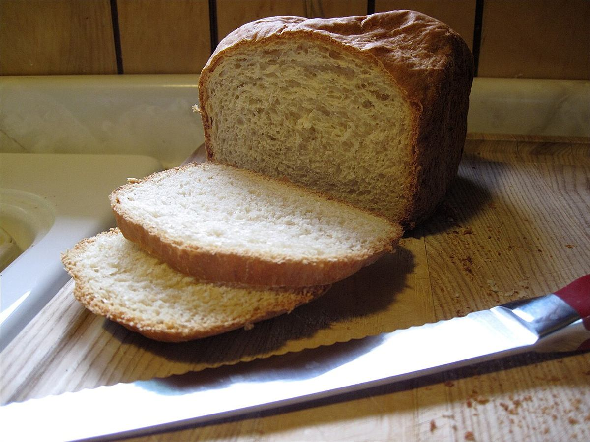
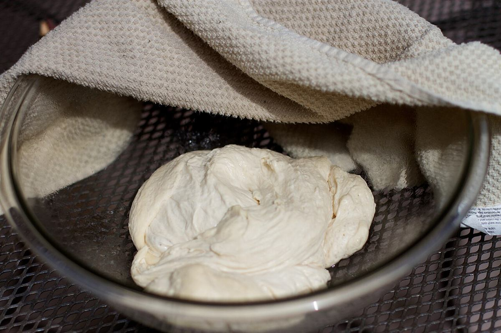
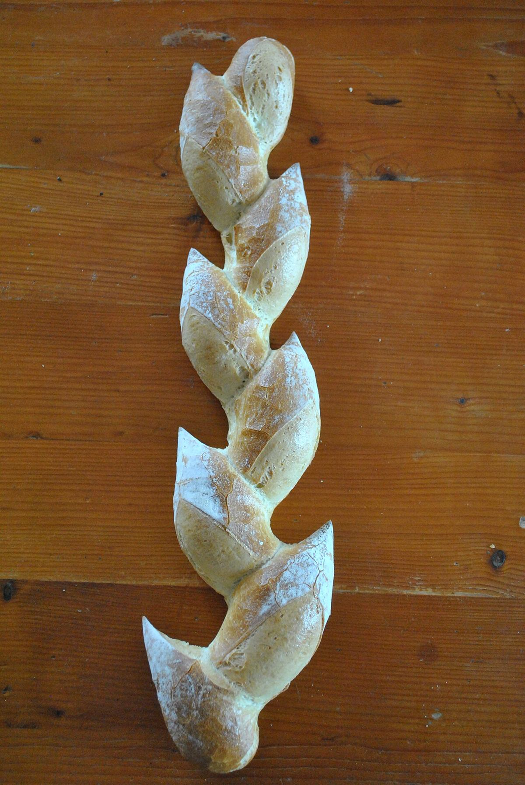

メニュー
商品や価格は、お電話またはInstagramでご案内します。
パンのイメージ
イメージ素材です。



商品ラインナップ・価格
準備中(お問い合わせください)
商品名・価格は確認でき次第の掲載となります。
ご来店前に
ご来店前にお電話でご確認いただくと安心です。
掲載の写真はイメージ素材です。実際の商品・店舗とは異なります。一部の写真は新居浜以外で撮影されたものです。
商品や価格は、お電話またはInstagramでご案内します。
イメージ素材です。



準備中(お問い合わせください)
商品名・価格は確認でき次第の掲載となります。
ご来店前にお電話でご確認いただくと安心です。
掲載の写真はイメージ素材です。実際の商品・店舗とは異なります。一部の写真は新居浜以外で撮影されたものです。